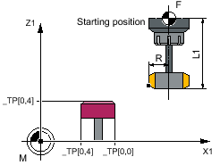

The "Individually check teeth" function can be used for remeasuring (offset in the wear) and initial measuring (offset in the geometry). Milling tools with up to 100 cutting edges can be measured.
A check is made as to whether the measured values of all cutting edges are within a defined tolerance range:
Upper limit: Safe area TSA and dimensional difference control DIF
Lower limit: Work offset range TZL
If the measured values are outside the tolerance range, an alarm is output.
If the measured value of the longest cutting edge is within the tolerance range, this is entered in the tool management. Violation of the lower limit is not corrected.
| Note |
|
The "individually check teeth" function is only possible in conjunction with the Tool measurement with rotating spindle function. |
The tool is positioned to the side of the probe and below the upper edge of the probe in the offset axis. To determine the spindle position of a cutting edge, the probe makes contact twice with the rotating tool.
This is followed by the length measurement with stationary spindle. For this purpose, the tool is positioned above the probe and offset by the tool radius to the center of the probe.
First, the cutting edge whose spindle position has been determined through lateral contact is measured. The other cutting edges are measured through spindle orientation.
After the measurements, the measured value of the longest cutting edge is entered in the tool offset, when this is within the tolerance range.
For radius measurement, the distance between the cutting edges must be identical (example: A tool with three cutting edges has a cutting edge every 120 degrees).
The tool is positioned to the side of the probe and below the upper edge of the probe in the offset axis. To determine the spindle position of the longest cutting edge, the probe makes contact twice with the rotating tool.
The exact spindle position and the cutting edge radius at the highest point of the cutting edge are then measured through multiple contacts when the spindle is stationary.
The other cutting edges are measured by changing the spindle orientation. The measured radius of the longest cutting edge is entered in the tool offset, when the value is within the tolerance range.
The following additional requirements apply:
The number of cutting edges of the milling tool must be entered in the tool offset.
Tool spindle with position measuring system.
The tool probe must be calibrated, see Calibrate probe (CYCLE971)
Before the cycle call, the tool must be positioned next to the probe and above the probe edge.
"Individually check teeth" (CYCLE971), starting position before measuring cycle call